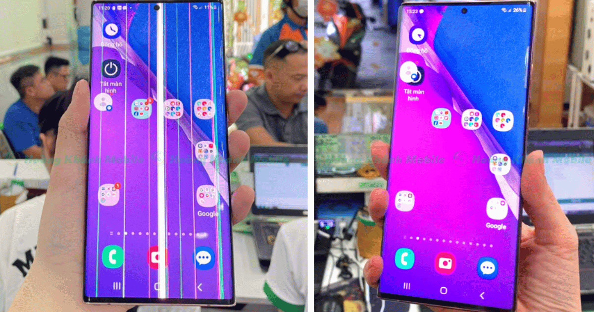

Samsung Note 20 Ultra Bị Sọc
Xanh Và Cách Khắc Phục
Bạn đang gặp vấn đề với màn
hình Samsung Note 20
Ultra bị sọc xanh và
không biết phải xử lý thế nào? Đừng lo lắng, trong bài viết
này, Thuận Phát Mobile sẽ giúp bạn tìm hiểu các dấu hiệu,
nguyên nhân, và cách khắc phục sự cố này. Đồng thời hướng dẫn
bạn cách chọn được nơi sửa chữa uy tín để khắc phục tình trạng
Note 20 Ultra sọc màn hình.
Dấu hiệu màn hình Samsung Note 20 Ultra bị sọc xanh
Sự cố màn hình Samsung Note 20 Ultra bị sọc xanh là một vấn đề phổ biến, và bạn có thể nhận diện qua các dấu hiệu sau:
-
Sọc màn hình: Xuất hiện các đường sọc ngang, dọc hoặc chéo trên bề mặt màn hình, với nhiều màu sắc khác nhau như đen, trắng, xanh lá, hoặc xanh dương.
-
Màn hình mờ hoặc giật lag: Màn hình trở nên mờ, không còn rõ nét, hoặc gặp hiện tượng giật lag khi sử dụng.
-
Hình ảnh biến dạng: Hình ảnh hiển thị trên màn hình không chính xác hoặc bị biến dạng.

Nguyên nhân khiến màn hình Samsung Note 20 Ultra bị sọc xanh
Note 20 Ultra được biết đến là dòng điện thoại cao cấp, với thiết kế màn hình cong tràn viền tinh tế. Tuy nhiên, không ít người dùng đã phản ánh về vấn đề sọc màn hình của thiết bị này. Nguyên nhân dẫn đến sự cố màn hình Samsung Note 20 Ultra bị sọc xanh có thể kể đến như:
-
Tác động vật lý: Đây thường là nguyên nhân phổ biến nhất gây ra lỗi sọc xanh. Khi bị rơi hoặc va đập mạnh, các thành phần bên trong màn hình có thể bị lỗi. Theo đó, gây ra các dải sọc ngang, dọc trên bề mặt màn hình.
-
Nhiễm nước: Một nguyên nhân khác có thể gây sọc màn hình là khi điện thoại tiếp xúc với nước. Nước thâm nhập có thể gây ra các hiện tượng đoản mạch hoặc oxy hóa và dẫn đến hư hỏng.
-
Cài đặt phần mềm không tương thích: Đôi khi, sự không tương thích giữa các phần mềm với hệ điều hành cũng có thể gây sọc màn hình.
-
Lỗi phần cứng: Tình trạng sọc xanh trên màn hình Samsung Note 20 Ultra có thể xuất phát từ lỗi phần cứng. Ví dụ như các thành phần bên trong màn hình bị hỏng hóc hoặc lỗi kỹ thuật.
| Thiết bị | Mặt kính | Màn hình | Nắp lưng |
| Samsung Note 20 Ultra |
1.250.000đ |
Linh kiện Oled: 3.600.000đ Chính hãng không khung: 5.200.000đ Chính hãng có khung: 5.800.000đ |
Linh kiện: 350.000đ Chính hãng: 500.000đ |
Các lỗi màn hình Samsung Note 20 Ultra gặp phải
Màn hình Samsung Note 20 Ultra có thể gặp một số lỗi phổ biến:
-
Xuất hiện các đường sọc làm che khuất hình ảnh và khiến cảm ứng bị liệt.
-
Thay vì sọc màn hình, màn hình xuất hiện đốm đen hoặc chấm tròn màu đen tại vị trí hỏng, không hoạt động. Các đốm đen này có thể lan rộng theo thời gian, gây loang màu.
-
Samsung Note 20 Ultra trắng màn hình khi xuất hiện đốm trắng như vết nấm mốc hoặc bị mờ, màu sắc bị nhạt đi như phủ lớp kính trắng đục.
-
Màn hình bị ám màu như đỏ, vàng, xanh, hoặc tím, khiến ánh sáng không còn là màu trắng, gây sai lệch tông màu hình ảnh.
-
Màn hình không hiển thị dù máy vẫn hoạt động, chuông và rung vẫn bình thường nhưng màn hình không sáng.
-
Cảm ứng không ổn định, nhảy loạn, hiển thị sai hoặc không hoạt động, làm máy bị đứng, nhấn không ăn.
Khi màn hình bị sọc xanh, việc can thiệp kịp thời sẽ đảm bảo trải nghiệm sử dụng mượt mà. Bạn hãy khắc phục sớm nhất có thể để hạn chế các vấn đề kỹ thuật không mong muốn.
Cách khắc phục màn hình Samsung Note 20 Ultra bị sọc xanh
Nếu bạn đang gặp phải tình trạng màn hình bị sọc, dưới đây là một số cách bạn có thể thử để khắc phục:
Khởi động lại thiết bị
Đây là một trong những giải pháp đơn giản nhất. Việc khởi động lại Samsung Note 20 Ultra có thể giúp làm mới dữ liệu và khắc phục các lỗi phần mềm gây ra sọc màn hình.
Bật/tắt chế độ an toàn
Để sửa lỗi sọc xanh trên màn hình, bạn có thể thử bật chế độ an toàn. Chế độ này cho phép thiết bị chỉ khởi động với các ứng dụng và dịch vụ mặc định, giúp xác định xem vấn đề có liên quan đến phần mềm của bên thứ ba hay không.
Dưới đây là cách kích hoạt chế độ an toàn trên điện thoại
Samsung:
Bước 1: Nhấn và giữ nút nguồn cho đến khi biểu tượng Tắt nguồn
xuất hiện trên màn hình.
Bước 2: Tiếp theo, nhấn và giữ biểu tượng Tắt nguồn cho đến khi
tùy chọn Chế độ an toàn hiển thị.
Cập nhật phần mềm
Màn hình Samsung Note 20 Ultra bị sọc xanh có thể xuất phát từ
việc thiết bị đang chạy trên phiên bản phần mềm đã cũ hoặc không
tương thích hoàn toàn với các ứng dụng hiện tại. Các bản cập
nhật phần mềm thường bao gồm các bản vá lỗi và cải tiến hiệu
suất, giúp khắc phục những sự cố mà người dùng có thể gặp phải,
bao gồm cả lỗi màn hình bị sọc.
Khi gặp vấn đề này, bạn nên kiểm tra và cập nhật phần mềm lên
phiên bản mới nhất. Việc này không chỉ giúp khắc phục lỗi sọc
màn hình mà còn cải thiện tính ổn định và bảo mật của thiết bị.
Để thực hiện, bạn có thể truy cập vào phần Cài đặt > Cập nhật
phần mềm và làm theo các hướng dẫn trên màn hình để tải xuống và
cài đặt bản cập nhật mới nhất. Sau khi hoàn tất, hãy khởi động
lại điện thoại để kiểm tra xem vấn đề có được giải quyết hay
không.
Sửa lỗi màn hình Samsung Note 20 Ultra bị sọc xanh ở
đâu uy tín?
Bạn có thể cân nhắc mang thiết bị đến các trung tâm sửa chữa uy tín để sữa chữa màn hình Samsung Note 20 Ultra. Tuy nhiên, để đảm bảo chất lượng và sử dụng linh kiện chính hãng, bạn nên tìm hiểu kỹ trước khi quyết định địa chỉ thay màn hình.
Để yên tâm về việc sửa chữa, hãy lựa chọn các cửa hàng cung cấp các chính sách sau:
-
Cam kết linh kiện chính hãng: Đảm bảo rằng cửa hàng sử dụng linh kiện chất lượng cao, chính hãng để thay thế, giúp duy trì hiệu năng và độ bền của điện thoại.
-
Kỹ thuật viên tay nghề cao: Chọn những địa chỉ có đội ngũ kỹ thuật viên giàu kinh nghiệm và tay nghề cao, chuyên về sửa chữa điện thoại, để đảm bảo quá trình sửa chữa được thực hiện một cách chuyên nghiệp và hiệu quả.
-
Quy trình thay thế màn hình chuyên nghiệp, đảm bảo an toàn cho máy.
-
Chế độ bảo hành lâu dài, uy tín sau khi khách hàng sử dụng dịch vụ.
Thuận Phát Mobile hiện là một trong những trung tâm sửa chữa
điện thoại Samsung hàng đầu tại Việt Nam, nổi tiếng với việc sử
dụng linh kiện màn hình chính hãng được phân phối trực tiếp từ
Samsung. Nhờ đó, Thuận Phát Mobile luôn đảm bảo mang đến cho
khách hàng dịch vụ chất lượng với mức giá cạnh tranh.
Tại Thuận Phát Mobile, mỗi dịch vụ sửa chữa đều đi kèm
với các cam kết sau:
-
Linh kiện chính hãng: Mọi linh kiện thay thế đều đảm bảo 100% có nguồn gốc rõ ràng và là hàng chính hãng.
-
Giá cả minh bạch: Giá dịch vụ được công khai rõ ràng, cạnh tranh nhất trên thị trường, cam kết không phát sinh thêm chi phí.
-
Giám sát quá trình sửa chữa: Khách hàng có thể trực tiếp quan sát toàn bộ quá trình sửa chữa thiết bị.
-
Hỗ trợ xuất hóa đơn VAT (eVAT): Mọi đơn hàng đều được hỗ trợ xuất hóa đơn VAT qua email.
-
Sửa chữa nhanh chóng: Hơn 90% các dịch vụ sửa chữa được thực hiện nhanh chóng, khách hàng có thể nhận lại máy trong khoảng 30 phút đến 1 giờ.
Bài viết này đã cung cấp cho bạn thông tin chi tiết về vấn đề
màn hình Samsung Note 20 Ultra bị sọc xanh.
Khi nhận thấy dấu hiệu màn hình bị sọc, bạn nên nhanh chóng tìm
cách khắc phục. Nếu không thể tự giải quyết, tốt nhất là mang
thiết bị đến trung tâm uy tín như Thuận Phát Mobile để được các
chuyên gia sửa chữa hỗ trợ.